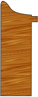
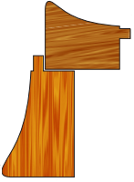
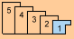

Add a Shadowbox
How to enter a Shadowbox
James Miller, MCPF, GCF - May 1, 2019
Option 1: Deep Rabbet Shadowbox
Deep rabbet shadowbox frame with shadowbox sides, aka mat-walls.

Deep Rabbet Shadowbox
-
On a Work Order, enter the frame’s Height and Width dimensions as usual.
-
In the Frame1 field, enter the item number of a deep-rabbet shadowbox moulding of sufficient depth.
-
In the first Mats field, enter the mat number to be used for the shadowbox background.
If the shadowbox sides (aka mat-walls) lining the shadowbox frame’s rabbet will be a different color than the background, then enter the additional mat number in the second Mats field. -
In the Mount/Stretch field’s drop-down list, select the type of mounting to be used in the shadowbox.
If more than one mounting type will be used, such as Corner Mounts in addition to Monofilament Ties, then click the underlined Mount/Stretch button, and select the multiple mounting types from drop-down lists in the fields provided.
If an un-listed mounting method will be used, then click the blue square and use the Price Override feature; enter the description of the mount and its price. -
In the Extra field, select “Shadowbox sides”, “Mat-walls”, or similar option from the drop-down list.
-
Enter Hardware, Fitting, and Glazing/Fabric components as usual.
Option 2: Stacked Shadowbox
Standard frame with standard extender or a second frame added to increase rabbet depth, with shadowbox sides, aka mat-walls.

Stacked Shadowbox
-
On the Work Order, enter the frame’s Height and Width dimensions as usual.
-
Click the Stacked Frame icon to open the Details screen for entering multiple frame numbers, such as for stacking.

-
In the Frame1 field, enter the number for a standard-depth frame moulding.
-
In the Frame2 field, enter the number for an extender to add frame depth, or another moulding to be stacked with the Frame 1 moulding to achieve proper depth for the shadowbox.
Click Done to return to the Work Order screen. -
In the first Mats field, enter the mat number to be used for the shadowbox background.
If the shadowbox sides (aka mat-walls) lining the shadowbox frame’s rabbet will be a different color than the background, then enter the additional mat number in the second Mats field. -
In the Mount/Stretch field’s drop-down list, select the type of mounting to be used in the shadowbox.
If more than one mounting type will be used, such as Corner Mounts in addition to Monofilament Ties, click on Mount/Stretch, then select the multiple mounting types from drop-down lists in the fields provided.
If an un-listed mounting method will be used, then click the blue square and use the Price Override feature; enter the description of the mount and its price. -
In the Extra field, select “Shadowbox sides”, “Mat-walls”, or similar option from the drop-down lis.
-
Enter Hardware, Fitting, and Glazing/Fabric components as usual.
© 2023 Adatasol, Inc.